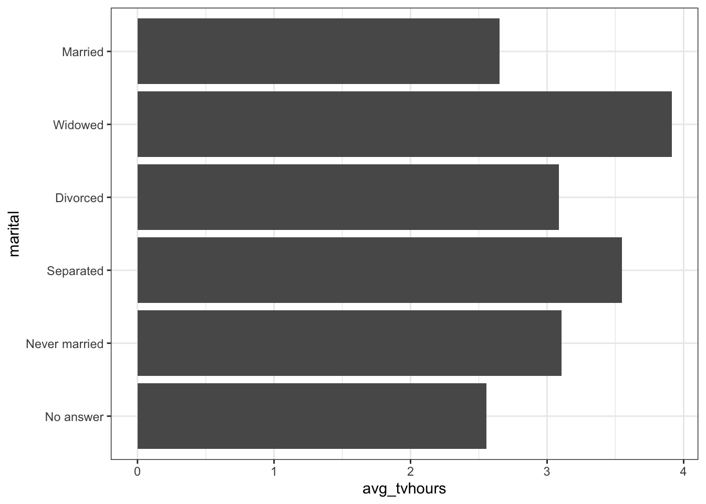
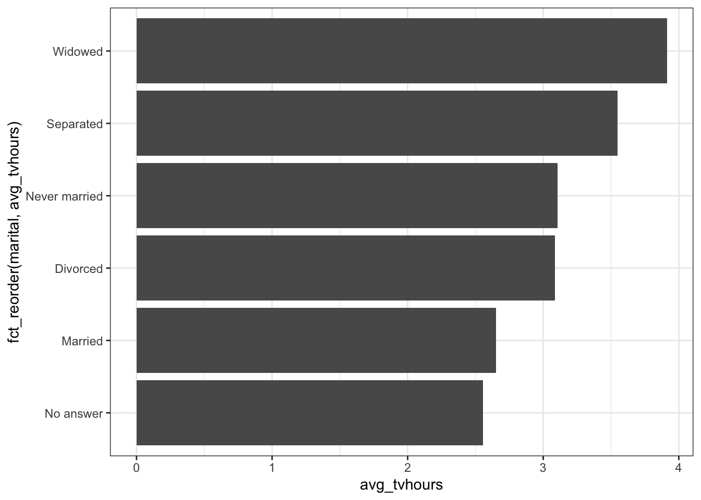

library(tidyverse) # use library(forcats) for this package onlyFactors
When working with categories, normally texts that represent certain categories of information we will need to them follow certain rules and validations.
With factors we can solved different issues and maintain categorical values:
- Validation: Avoid values not existent in the correspondent category.
- Order: Make them follow certain order depending on their significance.
As seen in the start of the unit we will work with forcats package included in the tidyverse environment.
Shirt sizes data
We are going to read the following data set with information of different shirts sizes sales…
tshirt_data <- read_csv("https://raw.githubusercontent.com/carviagu/data4courses/refs/heads/main/shirt_data.csv")Rows: 766 Columns: 3
── Column specification ────────────────────────────────────────────────────────
Delimiter: ","
chr (2): brand, size
dbl (1): size_num
ℹ Use `spec()` to retrieve the full column specification for this data.
ℹ Specify the column types or set `show_col_types = FALSE` to quiet this message.# A tibble: 8 × 2
size n
<chr> <int>
1 L 161
2 M 161
3 XL 158
4 S 151
5 XXL 105
6 XS 28
7 3XL 1
8 XXS 1In the following data set we have information of number of shirts sold with the size code. This sizes follow a natural order as the lowest one will be XXS and the highest one will be XXL.
But, if we try order the data by the size code something happens…
# A tibble: 8 × 2
size n
<chr> <int>
1 3XL 1
2 L 161
3 M 161
4 S 151
5 XL 158
6 XS 28
7 XXL 105
8 XXS 1The size codes don’t follow their natural order as them are being sorted by character following the order of the letters.
We can fix this converting the size code to a factor… like this example…
# First we define the size codes order
size_levels <- c("XXS","XS","S","M","L","XL","XXL")
tshirt_data_2 <- tshirt_data %>%
mutate(
# We transform the character variable to a factor
# providing the levels order
size = factor(size, levels = size_levels)
)
# Now we can see how the order changes
tshirt_data_2 %>%
count(size) %>%
arrange(size)# A tibble: 8 × 2
size n
<fct> <int>
1 XXS 1
2 XS 28
3 S 151
4 M 161
5 L 161
6 XL 158
7 XXL 105
8 <NA> 1But something has changed too, we have NAs. This happens as we have defined the possible levels for the factor, and there are some categories that doesn’t fit the levels defined, when doing the transformation, this values are set to NA as they are no valid.
You can check the possible levels we have with levels function:
Changing levels
You can change the existing levels re-coding them with fct_recode. In this example we want that to change XXS and XXL to other names…
tshirt_data_2 %>%
mutate(
size = fct_recode(size,
"Less than XS" = "XXS",
"Higher than XXL" = "XXL")
) %>%
count(size)# A tibble: 8 × 2
size n
<fct> <int>
1 Less than XS 1
2 XS 28
3 S 151
4 M 161
5 L 161
6 XL 158
7 Higher than XXL 105
8 <NA> 1We can also collapse them, creating a higher hierarchy with fct_collapse
tshirt_data_2 %>%
mutate(
size_group = fct_collapse(size,
regular = c("XS", "S", "M", "L", "XL"),
small = c("XXS"),
large = c("XXL"))
) %>%
count(size_group, size)# A tibble: 8 × 3
size_group size n
<fct> <fct> <int>
1 small XXS 1
2 regular XS 28
3 regular S 151
4 regular M 161
5 regular L 161
6 regular XL 158
7 large XXL 105
8 <NA> <NA> 1Reordering the levels
Other useful approach, can be reordering the factors following another value. This is frequently done when showing the the data in visualizations…
# A tibble: 21,483 × 9
year marital age race rincome partyid relig denom tvhours
<int> <fct> <int> <fct> <fct> <fct> <fct> <fct> <int>
1 2000 Never married 26 White $8000 to 9999 Ind,near … Prot… Sout… 12
2 2000 Divorced 48 White $8000 to 9999 Not str r… Prot… Bapt… NA
3 2000 Widowed 67 White Not applicable Independe… Prot… No d… 2
4 2000 Never married 39 White Not applicable Ind,near … Orth… Not … 4
5 2000 Divorced 25 White Not applicable Not str d… None Not … 1
6 2000 Married 25 White $20000 - 24999 Strong de… Prot… Sout… NA
7 2000 Never married 36 White $25000 or more Not str r… Chri… Not … 3
8 2000 Divorced 44 White $7000 to 7999 Ind,near … Prot… Luth… NA
9 2000 Married 44 White $25000 or more Not str d… Prot… Other 0
10 2000 Married 47 White $25000 or more Strong re… Prot… Sout… 3
# ℹ 21,473 more rowsWe can show a plot using counting the average tvhours per marital status…
gss_cat %>%
group_by(marital) %>%
summarise(avg_tvhours = mean(tvhours, na.rm=T)) %>%
ggplot() +
geom_col(aes(x =avg_tvhours, y=marital)) +
theme_bw()
Visually is not so easy to analyze, but we can change the order of the results so the categories are show from higher to lover average hours. For doing it we can use fct_reorder function with three arguments:
- f, the factor we want to reorder.
- x, numeric vector for reordering.
- Optional. fun, in the case that there is different x values for the same f. By default, fun is the average.
gss_cat %>%
group_by(marital) %>%
summarise(avg_tvhours = mean(tvhours, na.rm=T)) %>%
ggplot() +
geom_col(aes(x =avg_tvhours, y=fct_reorder(marital, avg_tvhours))) +
theme_bw()
There is a second way of using the fct_reorder in a mutate…